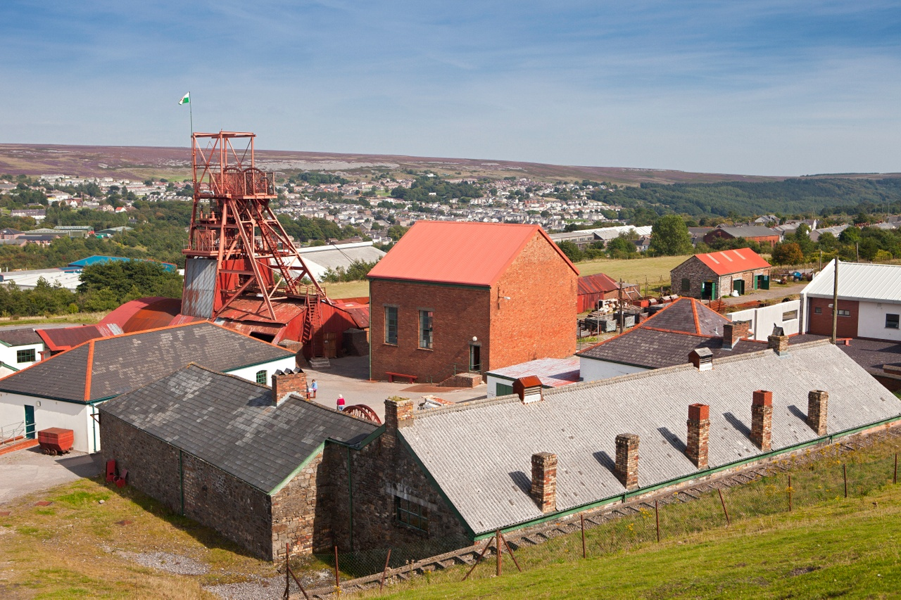
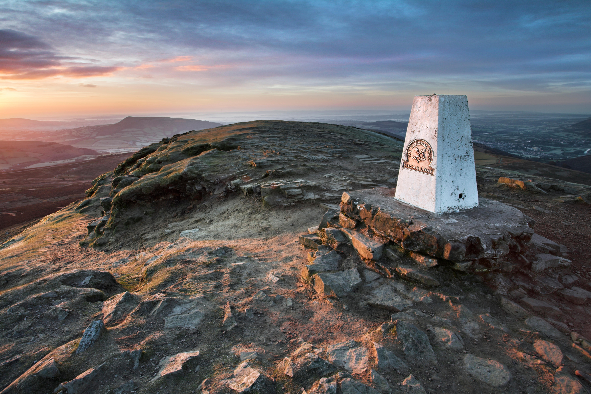

Over 2,000 years of castles, Celtic legends, and proud Welsh heritage.

Big Pit National Coal Museum is part of the Blaenavon Industrial Landscape UNESCO World Heritage Site. Visitors can descend into a real coal mine and learn how mining helped shape the history and identity of Wales.

Standing 596 metres high near Abergavenny, Sugar Loaf Mountain is one of the most recognizable peaks in South Wales. It forms part of the Brecon Beacons National Park and offers breathtaking panoramic views across the Black Mountains, the Usk Valley, and on clear days even into England.
Popular with hikers throughout the year, Sugar Loaf represents the natural beauty of Wales and reflects the country's deep connection to its rugged landscape and outdoor heritage.
Wales has one of the oldest cultures in Europe, with a history stretching back thousands of years. Ancient Celtic tribes settled the land long before the Romans arrived in AD 48.
During the Middle Ages, Wales was ruled by powerful Welsh princes before coming under English rule in the 13th century. Today, over 600 castles remain across the country, giving Wales more castles per square mile than anywhere else in the world.
The Welsh people have proudly preserved their language, traditions and national identity. Modern Wales celebrates its rich heritage through music, festivals, sport, particularly rugby, and the continued use of the Welsh language.
From ancient castles and mining heritage to breathtaking mountains and coastlines, Wales is a country where history, culture and nature come together in unforgettable ways.